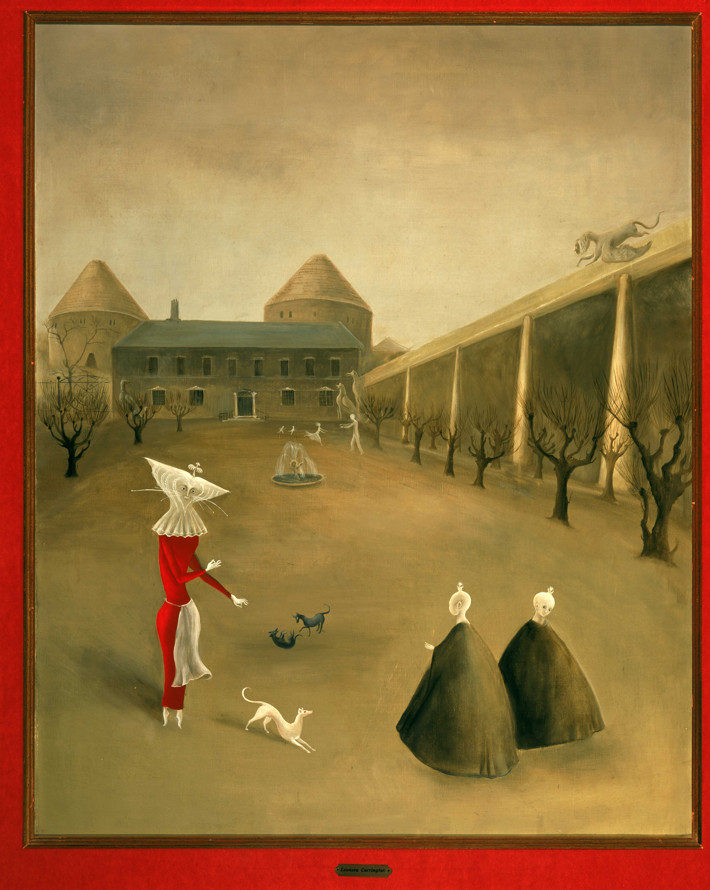

UNA CHARLA
ENTRE AMIGAS
Observa la pintura de la artista inglesa
y mexicana Leonora Carrington.
¿De qué crees que hablan los personajes?
¿Cómo es el lugar? ¿Qué sientes al ver la pintura?
¿Sorpresa? ¿Miedo? ¿Calma? ¿Frío? ¿Otra sensación?
¿Sabías que Leonora Carrington soñaba con
sopa de unicornio?
Esta artista surrealista decía que en sus sueños cocinaba sopa de unicornio para alimentar a criaturas mágicas. ¡Incluso las dibujaba en sus cuadros!


Leonora Carrington, Darvaux, 1950